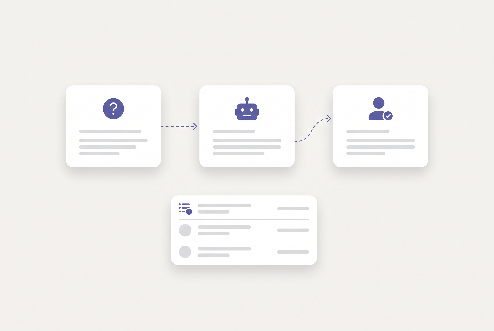

01 / 创建分身
3 分钟，造一个有你人格的分身
填好岗位、角色与人格设定，上传你的文档建起专属知识库——一个会按你的口吻、你的判断说话的数字分身，就此成形。

01 / 创建分身
填好岗位、角色与人格设定，上传你的文档建起专属知识库——一个会按你的口吻、你的判断说话的数字分身，就此成形。
02 / 替你答重复问题
同事随时来问，分身基于你的知识库人格化作答，并标注出处。那些一天被打断十几次的重复问题，不必每次都惊动你。

03 / 答不出，诚实转你
检索不到或没有把握时，它会如实说明、把问题转交给你本人，而不是抛给同事一个看似可信的错误答案。你补答的每一句，都会沉淀回你自己的分身——下次它就答得出。

04 / 越用越懂你
聊过的偏好、答过的判断、谁问过什么，都会沉淀成多层记忆。它记得你，也记得每个提问的人——越用越准，越用越像你本人。
— 能力
不是一个全公司共享的 AI，而是每位员工各自的分身——带人格、带判断、带边界，回答像本人。
每条回答都带来源，可追溯、可信赖。
没把握不硬答，诚实声明并转交本人，补答沉淀回你的分身。
语义 + 情景多层记忆，记住你怎么答、记住谁问过什么。
离职、休假、轮岗，分身随岗位整包移交，经验不断档。
— 为什么是 Replica
| 产品 | 有人格的分身 | 越用越懂你 多层记忆 |
答不出转本人 | 分身可交接 | 3 分钟自助上手 |
|---|---|---|---|---|---|
| Replica每人一个数字分身 | ✓ | ✓ | ✓ | ✓ | ✓ |
| Viven对内个人分身 | ✓ | – | – | – | – |
| Lucius对外单一 AI | – | – | ✓ | – | ✓ |
| Question Base对内问答捕获 | – | – | ✓ | – | – |
多层记忆「越用越懂你」与「分身可交接」，是只有 Replica 走通的两条线。
— 常见问题